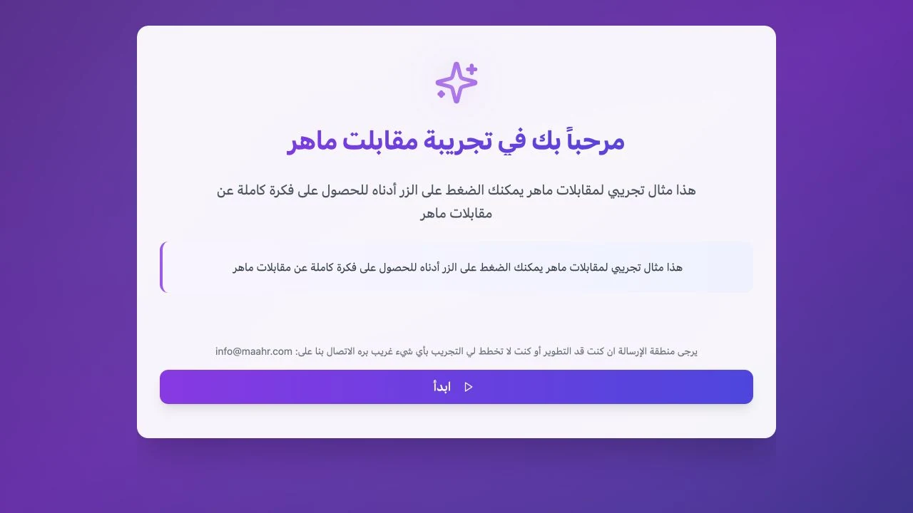
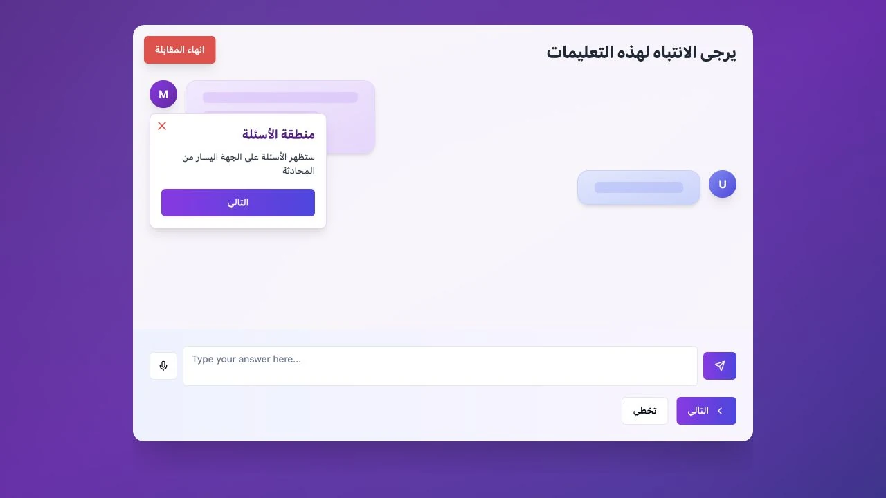
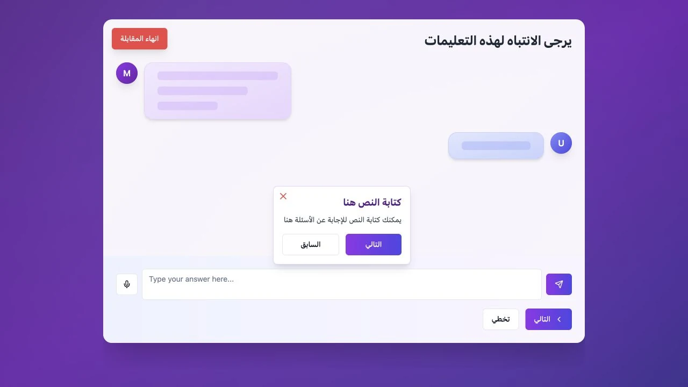
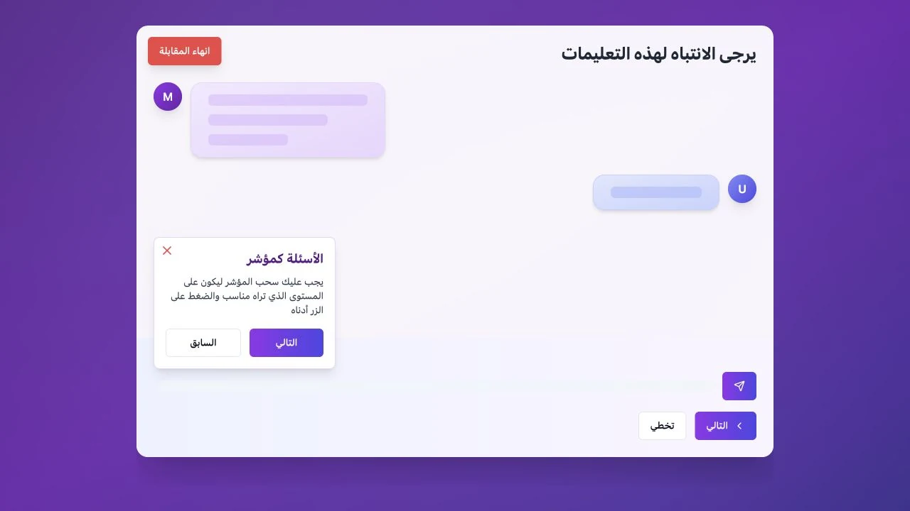
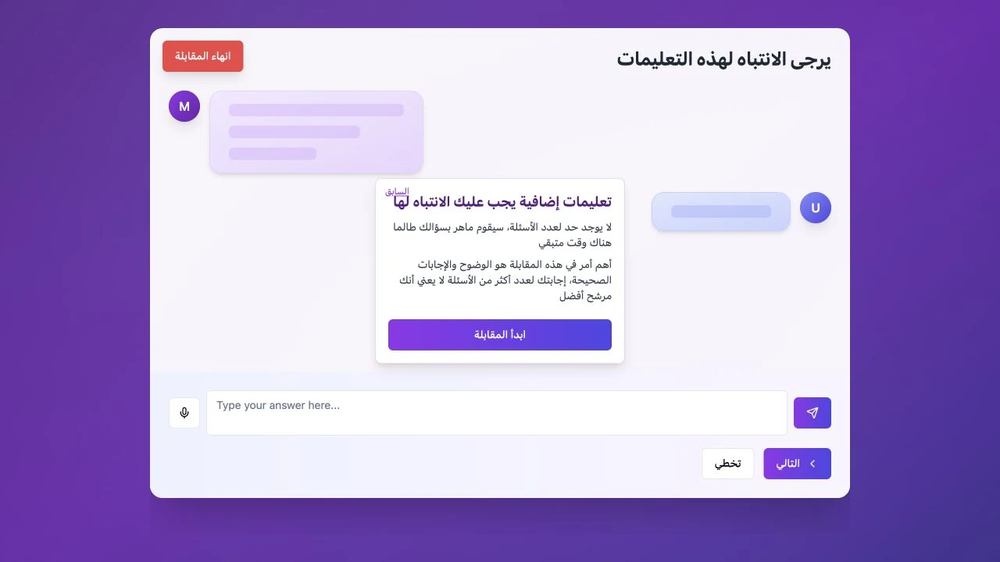
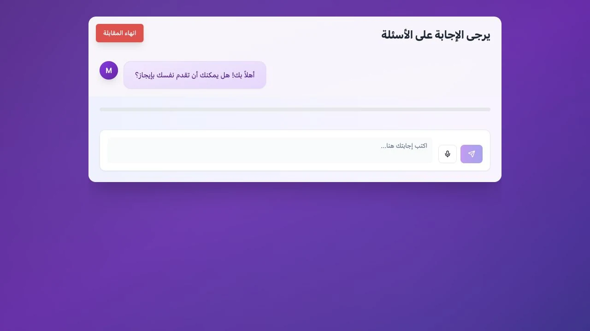
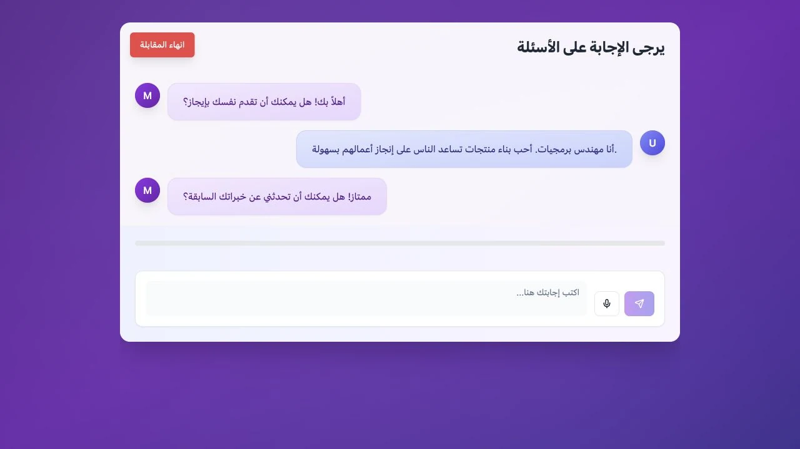
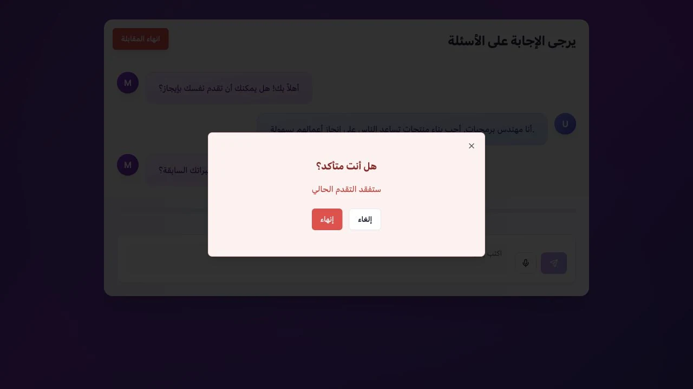
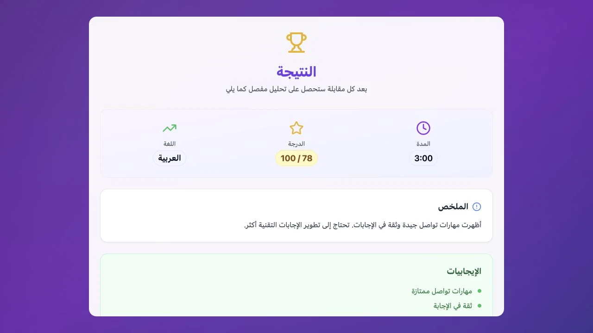

CASE FILE 07 · MAAAHR · HRTECH
Hackathon prototype · not livePractice the interview by actually talking.
§1 CONTEXT
Reading interview advice is not the same as saying the answer out loud.
Maaahr started as a text-based AI Engineering capstone. During a hackathon, I rebuilt it on the OpenAI Realtime API. The prototype speaks, listens, shows subtitles and gives a structured report after the interview.
§2 THE CONSTRAINTS
- Voice latency has to feel natural. Long silence makes the whole thing awkward.
- Barge-in must work: when the user interrupts the interviewer, the interviewer stops.
- Voice, transcript and scoring have to stay in sync.
- Evaluation must be structured and useful, not vibes.
- A product interview and an engineering interview need different questions.
§3 MY OWNERSHIP
- I built the whole product end to end.
- I built role-specific question planning so the interview matches the job.
- I implemented realtime voice sessions on the OpenAI Realtime API.
- I built live transcription and subtitles synced to audio.
- I built the evaluation pipeline and reports with GPT and Gemini.
§4 SYSTEM MAP
ROLE PROFILE ──▶ QUESTION PLANNER
│
▼
REALTIME VOICE SESSION (OpenAI Realtime API)
listening ⇄ thinking ⇄ speaking ⇄ interrupted
│
├──▶ live subtitles (latency-critical path)
└──▶ transcript
│
▼
EVALUATION PIPELINE
relevance · clarity · completeness
technical depth · communication
missed opportunities
│
▼
STRUCTURED FEEDBACK REPORT
§5 KEY DECISIONS
Listening, thinking, speaking and interrupted are explicit states. Interruption is normal because people interrupt.
The live transcript shows the user that the system heard them. It also makes unavoidable latency feel less empty.
The report covers relevance, clarity, completeness, technical depth, communication and missed opportunities. That is more useful than saying "good job."
The text version's question planner and evaluators moved into the voice version without a rewrite. Only the interaction layer changed.
§6 OUTCOME
The hard parts were latency, interruption and keeping the voice, transcript and score together.
§7 FAILURE MODES, HANDLED
Graceful reconnect; the transcript is preserved and the interview resumes where it stopped.
The interviewer gives a short prompt instead of hanging forever.
Periodic re-sync between audio and text keeps subtitles honest about what was actually said.
Filler acknowledgements keep the conversational rhythm while the real response is on its way.
§8 INSIDE THE PRODUCT
Inside the interview-prep demo.
Actual Maaahr interview-prep demo interface, captured locally. Tutorial placeholders and the sample result belong to the original demo. These screens document the interface; the demo uses simulated responses.
CLICK TO EXPLORE ↗


The original Arabic welcome introduces the interview-prep demo.


The guided tour explains the interviewer’s side of the conversation.


The next instruction points directly at the text input.

The tutorial uses placeholder controls to explain a multiple-choice question.


A separate tutorial state explains the slider question format.


The final brief explains timing and answer quality.


The actual demo interview screen pairs the question with an answer composer.


A fictional answer receives one of the demo’s simulated follow-up responses.


The original confirmation protects a user from ending the session accidentally.


The demo report shows duration, a sample score, summary, and strengths; these are simulated results.
§9 WHAT I LEARNED
Voice latency cannot be hidden. The product has to make it feel natural.
§10 WHAT I'D CHANGE TODAY
I would add record and review so users can hear their answer next to the feedback. I would also add different interviewer styles and calibrate the scoring against real hiring decisions.